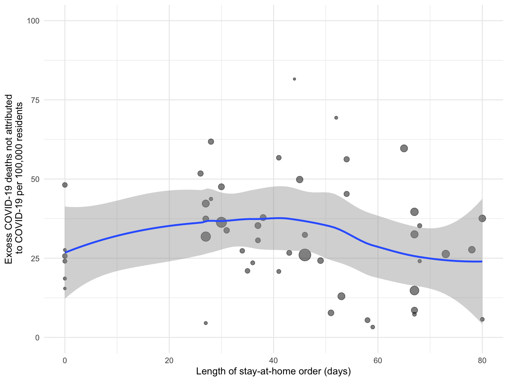

excess_deaths <- read_csv("data/Excess_Deaths_Associated_with_COVID-19.csv") %>%
clean_names() %>%
rename(end_week=week_ending_date) %>%
filter(type=="Predicted (weighted)"&outcome=="All causes")
covid_deaths <- read_csv("data/Provisional_COVID-19_Death_Counts_by_Week_Ending_Date_and_State.csv") %>%
clean_names() %>%
mutate(end_week=mdy(end_week))%>%
select(end_week,state,covid_19_deaths,total_deaths,percent_of_expected_deaths,pneumonia_deaths, pneumonia_and_covid_19_deaths, influenza_deaths, pneumonia_influenza_or_covid_19_deaths)
merged_data <- inner_join(covid_deaths,excess_deaths) %>%
mutate(excess_non_covid=excess_higher_estimate-covid_19_deaths)
states= merged_data %>%
group_by(state) %>%
filter(end_week < as.Date("2020-11-1") & state !="United States" & state!="New York City") %>%
filter(!is.na(covid_19_deaths)) %>%
filter(!is.na(excess_higher_estimate)) %>%
summarise(
excess_deaths=sum(excess_higher_estimate),
covid_deaths=sum(covid_19_deaths),
excess_not_covid=sum(excess_higher_estimate)-sum(covid_19_deaths))
state_pop <- read_csv("data/State_Populations.csv") %>%
clean_names()
states=right_join(states,state_pop) %>%
mutate(excess_death_r=excess_deaths/population*100000) %>%
mutate(covid_death_r=covid_deaths/population*100000) %>%
mutate(excess_not_covid_r=excess_not_covid/population*100000)
stay_at_home_orders <- read_csv("data/stay_at_home_orders_final.csv",
col_types = cols(Start = col_date(format = "%m/%d/%Y"),
End = col_date(format = "%m/%d/%Y"))) %>%
clean_names() %>%
mutate(stay_at_home=if_else(length==0,FALSE,TRUE))
states=right_join(states,stay_at_home_orders)
states %>%
ggplot( aes(x=length,y=excess_not_covid_r, size=population))+
labs(x = "Length of stay-at-home order (days)", y = "Excess COVID-19 deaths not attributed\n to COVID-19 per 100,000 residents") +
geom_point(alpha=0.5)+
geom_smooth(, weight="population")+
theme(legend.position = "none") +
scale_y_continuous(limits=c(0, 100))
mod3 = lm.cluster(excess_not_covid_r ~ length, data = states, cluster="state")
mod3_sum =
summary(mod3)%>%
as.tibble()
mod3_CI =
confint(mod3)%>%
as.tibble()
mod3_df =
bind_cols(mod3_sum, mod3_CI)%>%
mutate(
Variables = c("Intercept", "Length of stay-at-home order")
) %>%
relocate(Variables) %>%
kbl(caption="Linear model output assessing association of length of lockdown and non-COVID-19 excess deaths", digits = 2) %>%
kable_classic()
mod3_dfMatthew Angulo (ma3997), Chong Li (cl4045), Alexander Melamed (am5195), Diana Sanchez (des2190)
Data Science Fall 2020